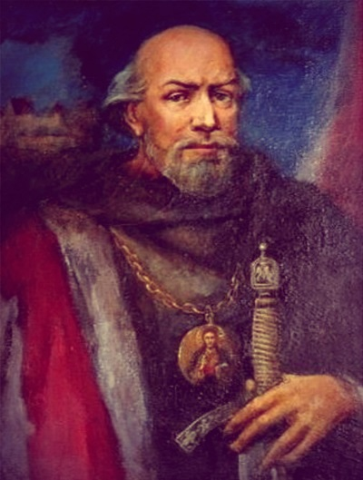
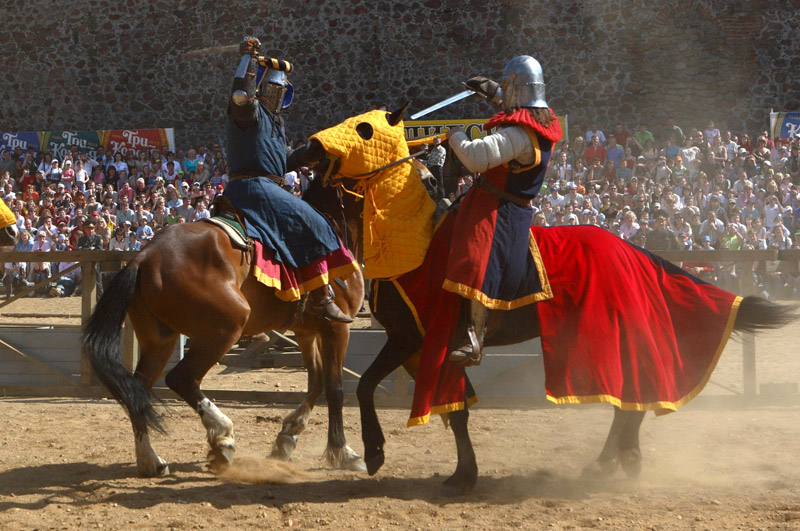

Троицкий Костёл Святой Троици
Изначально Новогрудский замок был деревянным и служил защитой от татар. В начале XIII столетия Войшелк, наследник литовского князя Миндовга, распорядился возвести каменную башню. Так появилась Щитовая (Центральная) башня, которая имела квадратную форму и служила основным опорным элементом Новогрудского сооружения при защите от массовых нашествий противников.

Спустя столетие, центральная башня была отстроена заново, но уже из кирпича. Необходимость в увеличении защитной постройки возникла после набегов Тевтонского ордена, тогда к XV веку к сооружению присоединились 3 башни – Костельная, Посадская и Малая Башня-брама, которые соединялись между собой высокой защитной стеной.
Позднее была сооружена еще одна башня – Колодезная, она располагалась над родником и имела тайный проход в замок с доступом к воде. В новом виде Новогрудский замок служил стойкой обороной от набегов крестоносцев.
В 16 столетии в комплекс Новогрудского сооружения входило 7 башен, соединенных высокими сплошными стенами, а внизу располагался оборонительный 30-ти метровый ров. За свою историю Новогрудский замок уверенно сдерживал все нашествия противников, его башни были настолько крепкими, что ни один враг не мог покорить их.
Легендарный форпост пал во времена войн. Первые разрушения крепостного сооружения произошли в период Русско-польской войны (1654-1667 гг.) после осаждения русскими войсками. Эта битва привела к уничтожению всего города Новогрудка. Окончательно замок был уничтожен спустя полвека: в период Северной войны (1700-1721 годы).
Как и любой исторический объект, Новогрудский замок окутан тайнами и легендами. Предания передавались через поколения, и теперь, благодаря им, можно окунуться в мистику событий тех времен.
В процессе археологических раскопок на территории Новогрудского замка был обнаружен Кубок Святой Ядвиги, подаренный Миндовгу византийским императором. По легенде в этом кубке вода превращалась в вино. Кубок, на котором было изображение льва, грифона и двух змей, обвивающих Чашу Жизни, принадлежал жене герцога Силезии – Ядвиге, канонизированной после смерти.
Во времена княжества Литовара, Новогрудок оказался под угрозой тевтонцев. Князь посчитал, что сдаться врагам и отдать город – будет верным выходом,чтобы избежать человеческих потерь, однако, его супруга Гражина выступила против такого решения и попыталась защитить Великое княжество Литовское. Она облачилась в доспехи мужа и самостоятельно вывела армию на противников. В бою Гражина погибла, но ее поступок привел к победе над врагами. В честь отважной княжны озеро рядом с Новогрудским замком назвали Литовка.
От некогда мощного и устрашающего сооружения, как и от Гольшанского замка, остались только руины двух башен, Костельной и Щитовой, на которых виднелись огромные трещины и сколы, напоминающие о силе и мощи средневековой битвы. Башни подлежали длительной реставрации. В 2014-2015 году Костельную башню “отреставрировали” – обложили современным кирпичом, законсервировав тем самым руины. По мнению руководства района, берегли конструкцию от окончательного падения и разрушения “до лучших времен”.
А вот Щитовую башню оставили “как есть”. Дело в том, что до нашего времени не дошло ни одного документального свидетельства того, как она выглядела, будучи цельной башней. А правила программы реконструкции гласят: любые работы должны заканчиваться там, где начинается загадка…На территории Новогрудского замка каждый год устраивают рыцарские турниры (как в Мстиславле), тематические праздники, фестивали средневековой культуры, проводят экскурсии.
